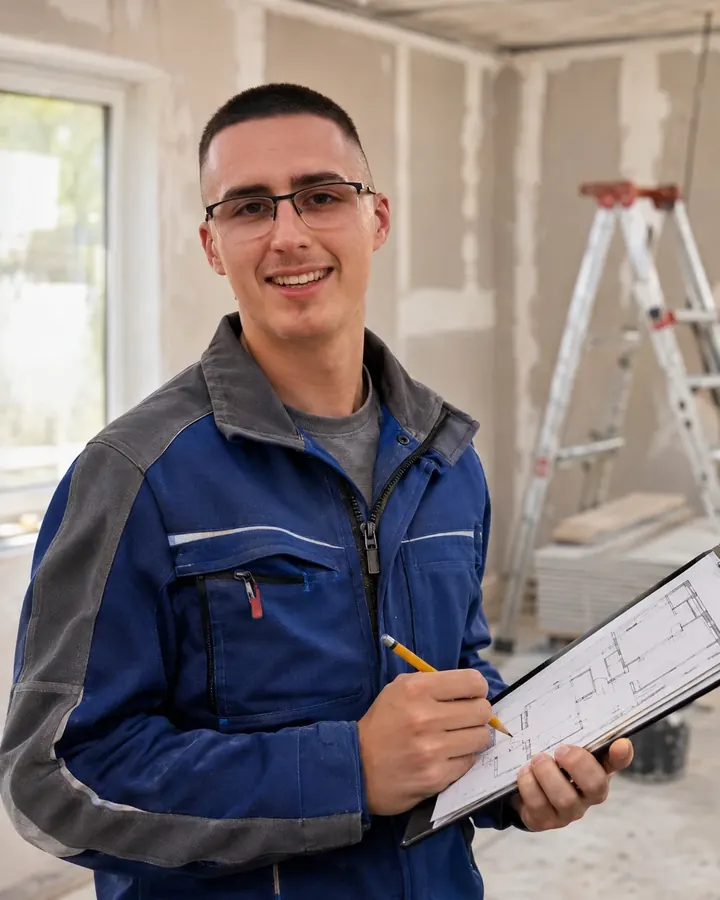
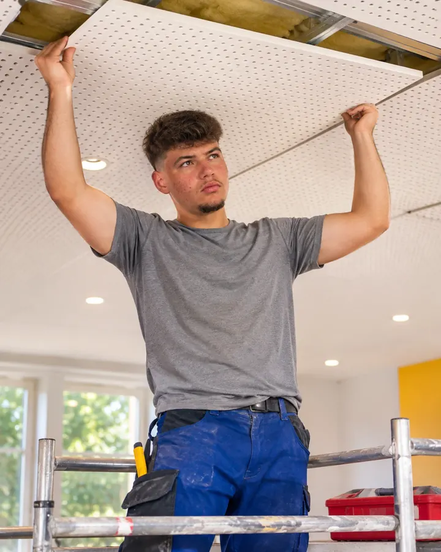
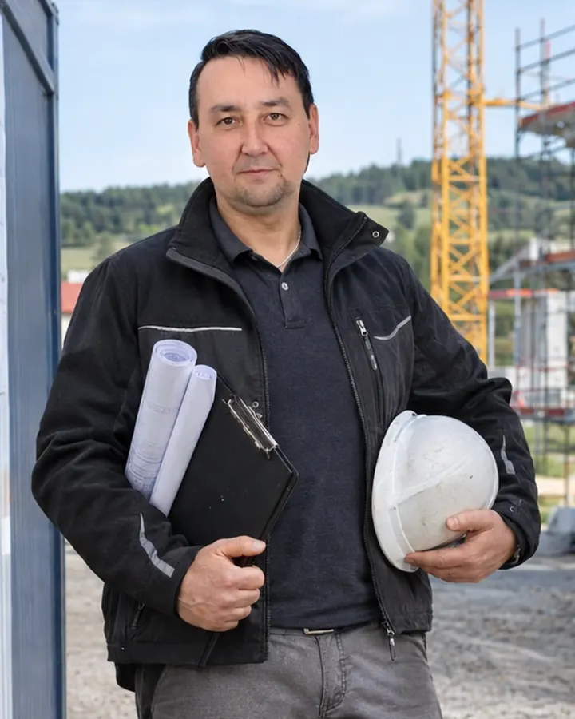
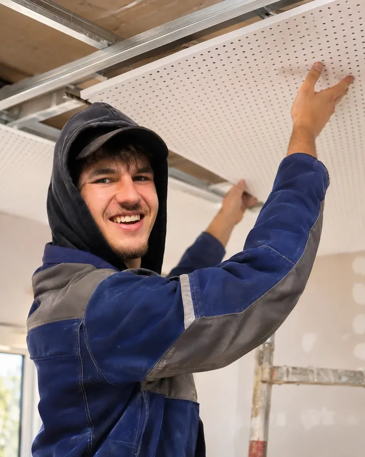
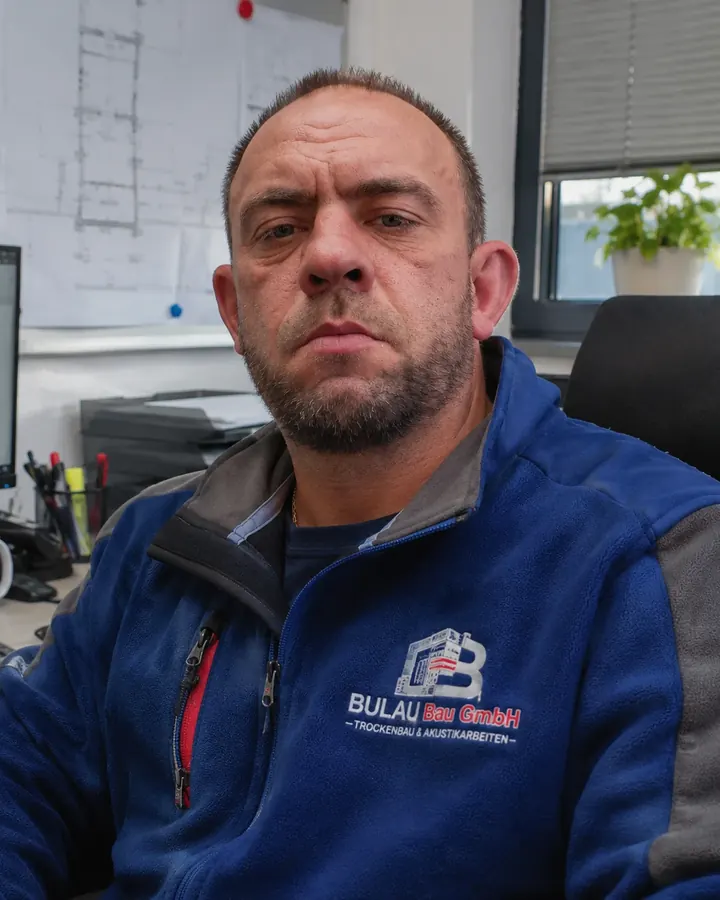
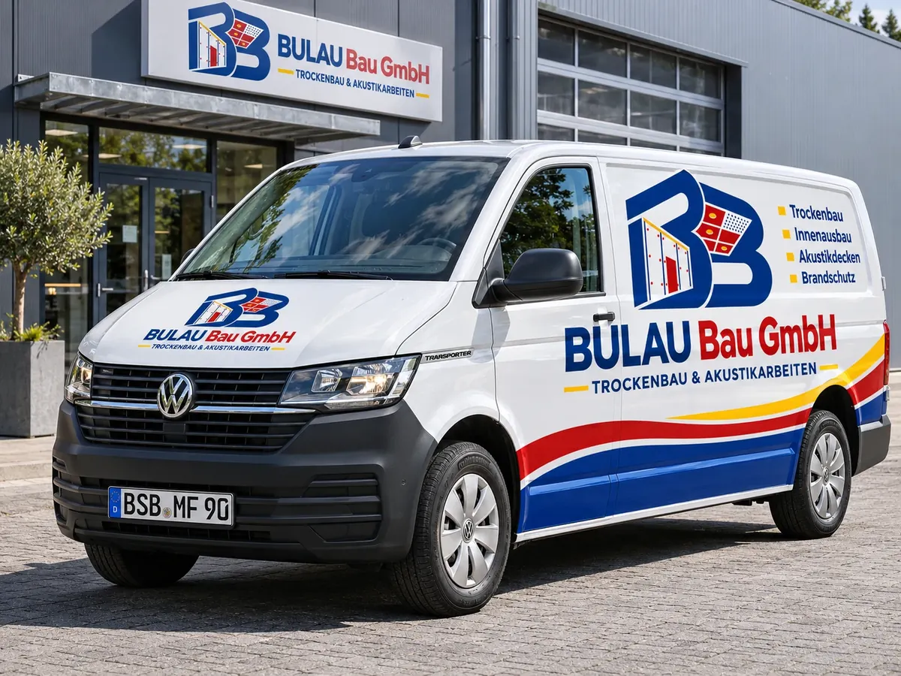
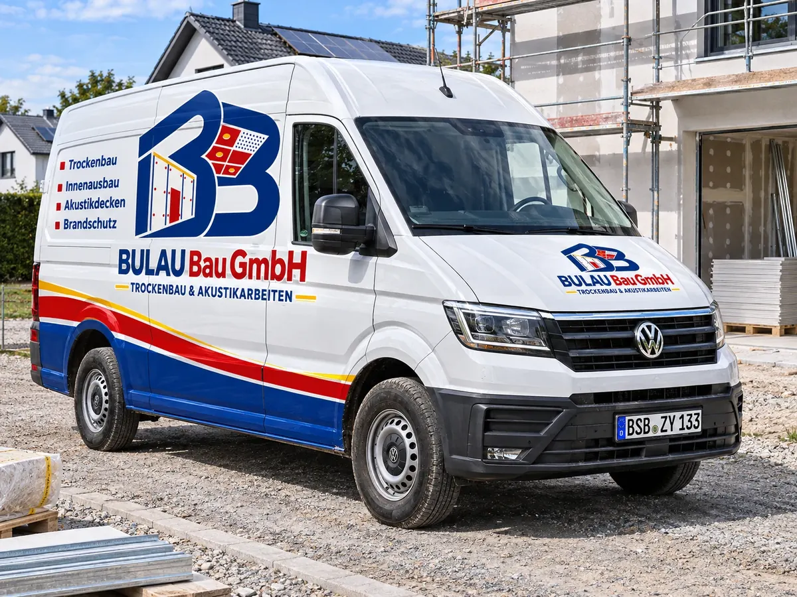
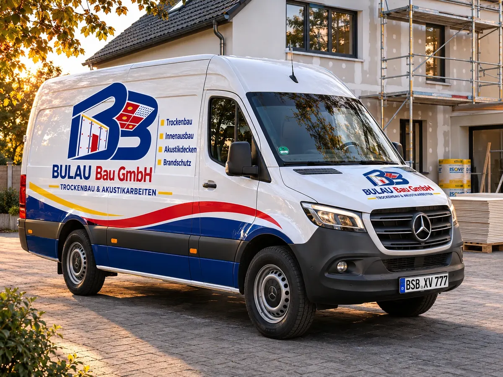
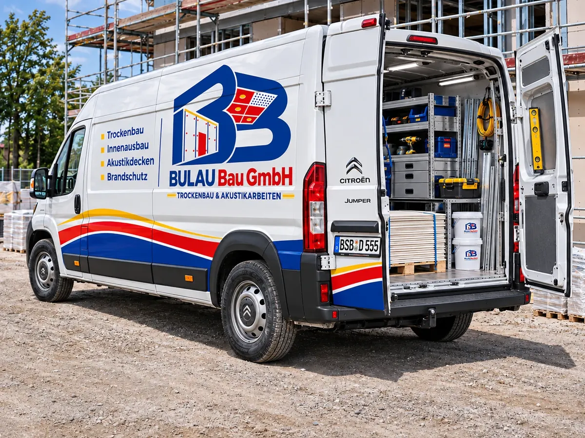

Sauber
Böden abdecken, Staub absaugen, abends aufräumen. Sie sollen in Ihrem Haus weiter wohnen können.
Sechs Leute aus Bersenbrück, die gern sehen, wie aus einem Rohbau ein Zuhause wird.
2007Meisterbetrieb seit
Seit 2007 sind wir als Meisterbetrieb im Trockenbau unterwegs. Angefangen hat alles hier in der Region rund um Bersenbrück. Heute fahren wir für passende Projekte bis zu 200 km weit.
Wir sind bewusst klein geblieben. So kennt jeder im Team jede Baustelle, und Sie wissen immer, wer bei Ihnen klingelt.







Wenn einer dieser Wagen vor Ihrer Tür parkt, sind wir das. Alle mit Bersenbrücker Kennzeichen und voll mit Werkzeug und Material.




Böden abdecken, Staub absaugen, abends aufräumen. Sie sollen in Ihrem Haus weiter wohnen können.
Wenn wir 7 Uhr sagen, stehen wir um 7 vor der Tür. Verschiebt sich etwas, rufen wir vorher an.
Von der Besichtigung bis zur Abnahme haben Sie eine feste Person, die Ihr Projekt kennt.
Unser Betrieb sitzt Am Bahnhof 9 in Bersenbrück, zwischen Osnabrück und Oldenburg. Für Projekte fahren wir bis etwa 200 km weit, also auch nach Bremen, Münster, Bielefeld oder Hannover.
Sie wohnen etwas weiter weg? Fragen Sie trotzdem, bei größeren Projekten finden wir oft eine Lösung.
Am einfachsten beim Termin vor Ort. Schreiben Sie uns kurz, was Sie vorhaben, und wir melden uns innerhalb von zwei Werktagen.